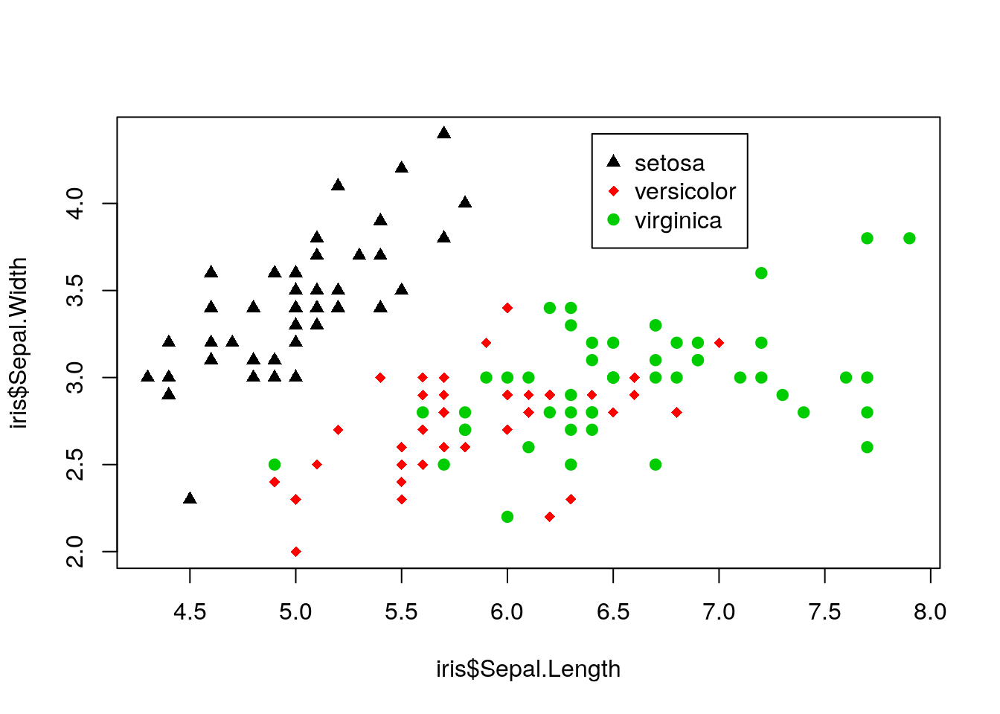

2.3 Using R and RStudio
Start RStudio as you would any other program in your operating system. For example, under Microsoft Windows use the Start Menu or double click on the shortcut on the desktop (if a shortcut was created in the installation process). A (rather small) view of RStudio is displayed in Figure 2.1.
FIGURE 2.1: The RStudio IDE
Initially the RStudio window contains three smaller windows. For now our main focus will be the large window on the left, the Console window, in which R statements are typed. The next few sections give simple examples of the use of R. In these sections we will focus on small and non-complex data sets, but of course later in the book we will work with much larger and more complex sets of data. Read these sections at your computer with R running, and enter the R commands there to get comfortable using the R console window and RStudio.
2.3.1 R as a Calculator
R can be used as a calculator. Note that # is the comment character in R, so R ignores everything following this character. Also, you will see that R prints [1] before the results of each command. Soon we will explain its relevance, but ignore this for now. The command prompt in R is the greater than sign >.
34+20*sqrt(100) ## +,-,*,/ have the expected meanings## [1] 234exp(2) ##The exponential function## [1] 7.389056log10(100) ##Base 10 logarithm## [1] 2log(100) ##Base e logarithm## [1] 4.6051710^log10(55)## [1] 55Most functions in R can be applied to vector arguments rather than operating on a single argument at a time. A vector is a data structure that contains elements of the same data type (i.e. integers).
1:25 ##The integers from 1 to 25## [1] 1 2 3 4 5 6 7 8 9 10 11 12 13 14 15 16 17 18 19 20 21 22 23
## [24] 24 25log(1:25) ##The base e logarithm of these integers## [1] 0.0000000 0.6931472 1.0986123 1.3862944 1.6094379 1.7917595 1.9459101
## [8] 2.0794415 2.1972246 2.3025851 2.3978953 2.4849066 2.5649494 2.6390573
## [15] 2.7080502 2.7725887 2.8332133 2.8903718 2.9444390 2.9957323 3.0445224
## [22] 3.0910425 3.1354942 3.1780538 3.21887581:25*1:25 ##What will this produce?## [1] 1 4 9 16 25 36 49 64 81 100 121 144 169 196 225 256 289
## [18] 324 361 400 441 484 529 576 6251:25*1:5 ##What about this?## [1] 1 4 9 16 25 6 14 24 36 50 11 24 39 56 75 16 34
## [18] 54 76 100 21 44 69 96 125seq(from=0, to=1, by=0.1) ##A sequence of numbers from 0 to 1## [1] 0.0 0.1 0.2 0.3 0.4 0.5 0.6 0.7 0.8 0.9 1.0exp(seq(from=0, to=1, by=0.1)) ##What will this produce?## [1] 1.000000 1.105171 1.221403 1.349859 1.491825 1.648721 1.822119
## [8] 2.013753 2.225541 2.459603 2.718282Now the mysterious square bracketed numbers appearing next to the output make sense. R puts the position of the beginning value on a line in square brackets before the line of output. For example if the output has 40 values, and 15 values appear on each line, then the first line will have [1] at the left, the second line will have [16] to the left, and the third line will have [31] to the left.
2.3.2 Basic descriptive statistics and graphics in R
It is easy to compute basic descriptive statistics and to produce standard graphical representations of data in R. First we create three variables with horsepower, miles per gallon, and names for 15 cars.6 In this case with a small data set we enter the data “by hand” using the c() function, which concatenates its arguments into a vector. For larger data sets we will clearly want an alternative. Note that character values are surrounded by quotation marks.
A style note: R has two widely used methods of assignment: the left arrow, which consists of a less than sign followed immediately by a dash: <- and the equals sign: =. Much ink has been used debating the relative merits of the two methods, and their subtle differences. Many leading R style guides (e.g., the Google style guide at https://google.github.io/styleguide/Rguide.xml and the Bioconductor style guide at http://www.bioconductor.org/developers/how-to/coding-style/) recommend the left arrow <- as an assignment operator, and we will use this throughout the book.
Also you will see that if a command has not been completed but the ENTER key is pressed, the command prompt changes to a + sign.
car.hp <- c(110, 110, 93, 110, 175, 105, 245, 62, 95, 123,
123, 180, 180, 180, 205)
car.mpg <- c(21.0, 21.0, 22.8, 21.4, 18.7, 18.1, 14.3, 24.4, 22.8,
19.2, 17.8, 16.4, 17.3, 15.2, 10.4)
car.name <- c("Mazda RX4", "Mazda RX4 Wag", "Datsun 710",
"Hornet 4 Drive", "Hornet Sportabout", "Valiant",
"Duster 360", "Merc 240D", "Merc 230", "Merc 280",
"Merc 280C", "Merc 450SE", "Merc 450SL",
"Merc 450SLC", "Cadillac Fleetwood")
car.hp## [1] 110 110 93 110 175 105 245 62 95 123 123 180 180 180 205car.mpg## [1] 21.0 21.0 22.8 21.4 18.7 18.1 14.3 24.4 22.8 19.2 17.8 16.4 17.3 15.2
## [15] 10.4car.name## [1] "Mazda RX4" "Mazda RX4 Wag" "Datsun 710"
## [4] "Hornet 4 Drive" "Hornet Sportabout" "Valiant"
## [7] "Duster 360" "Merc 240D" "Merc 230"
## [10] "Merc 280" "Merc 280C" "Merc 450SE"
## [13] "Merc 450SL" "Merc 450SLC" "Cadillac Fleetwood"Next we compute some descriptive statistics for the two numeric variables (car.hp and car.mpg)
mean(car.hp)## [1] 139.7333sd(car.hp)## [1] 50.77607summary(car.hp)## Min. 1st Qu. Median Mean 3rd Qu. Max.
## 62.0 107.5 123.0 139.7 180.0 245.0mean(car.mpg)## [1] 18.72sd(car.mpg)## [1] 3.714297summary(car.mpg)## Min. 1st Qu. Median Mean 3rd Qu. Max.
## 10.40 16.85 18.70 18.72 21.20 24.40Next, a scatter plot of cars.mpg versus cars.hp:
plot(car.hp, car.mpg)
Unsurprisingly as horsepower increases, mpg tends to decrease. This relationship can be investigated further using linear regression, a statistical procedure that involves fitting a linear model to a data set in order to further understand the relationship between two variables.
2.3.3 An Initial Tour of RStudio
When you created the car.hp and other vectors in the previous section, you might have noticed the vector name and a short description of its attributes appear in the top right Global Environment window. Similarly, when you called plot(car.hp,car.mpg) the corresponding plot appeared in the lower right Plots window.
A comprehensive, but slightly overwhelming, cheatsheet for RStudio is available here https://www.rstudio.com/wp-content/uploads/2016/01/rstudio-IDE-cheatsheet.pdf. As we progress in learning R and RStudio, this cheatsheet will become more useful. For now you might use the cheatsheet to locate the various windows and functions identified in the coming chapters.
These are from a relatively old data set, with 1974 model cars.↩